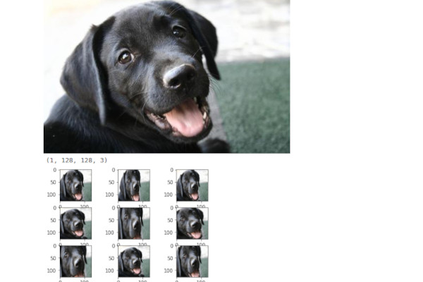
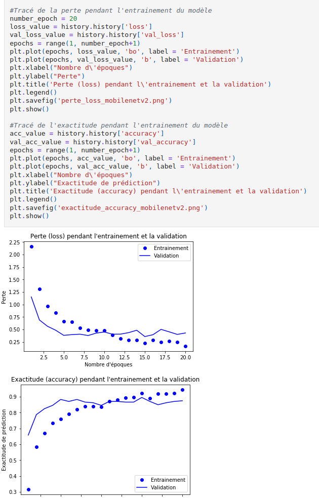

Home
Dogs Deep Learning
Computer vision of our dog friends
TenserFlow
Keras
Docker
2022 - Simplon project
About the project
Project carried out in the simplon training course 12 predicted races on stanford dogs dataset
- Australian_terrier
- Basset
- Chihuahua
- Chow
- German_shepherd
- Labrador_retriever
- Pug
- Rottweiler
- Saint_Bernard
- Samoyed
- Siberian_husky
- Walker_hound
Use of CNN and transfert learning models (MobileNetV2 and VGG16) Best avg acc 86 % with MobileNetV2.
Lib i used
- Python3
- Streamlit (not included here)
- Pandas
- Numpy
- Keras
- Tensorflow
- PIL
I used Docker for deployment
Thanks to Eric, Alexia, Marceline
Screenshots :

